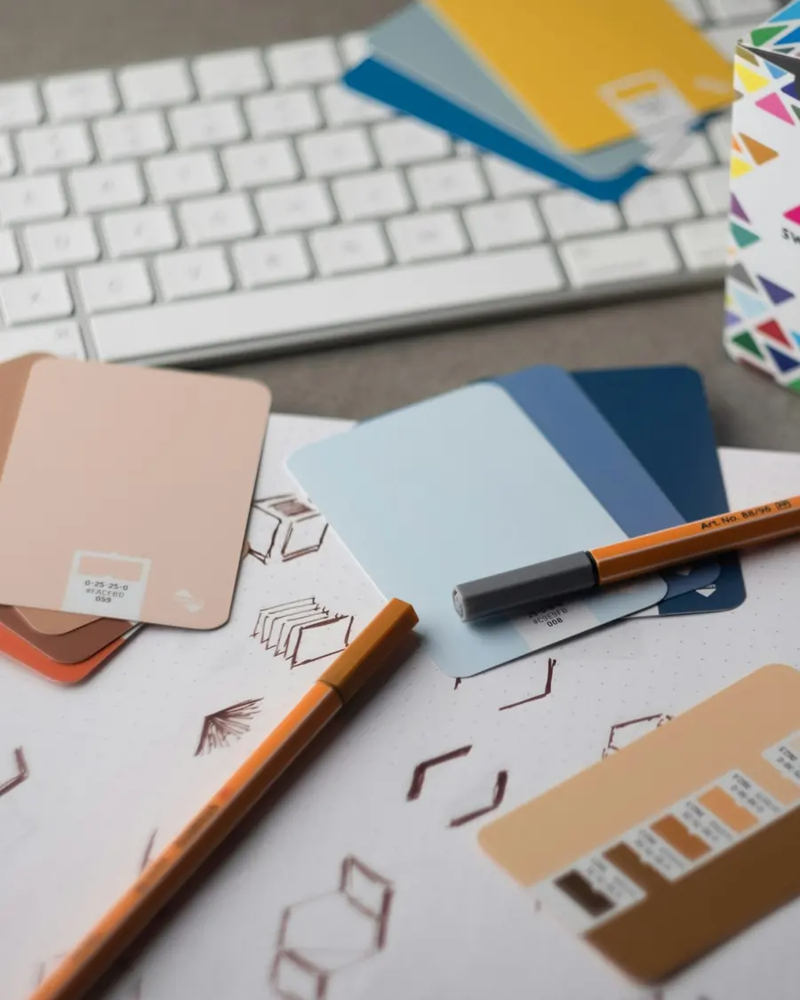
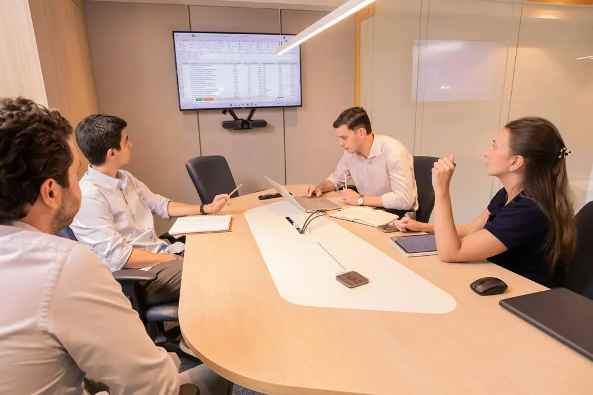
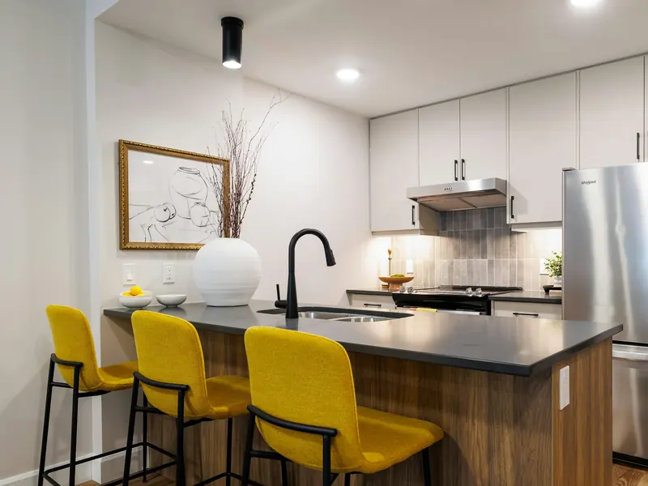
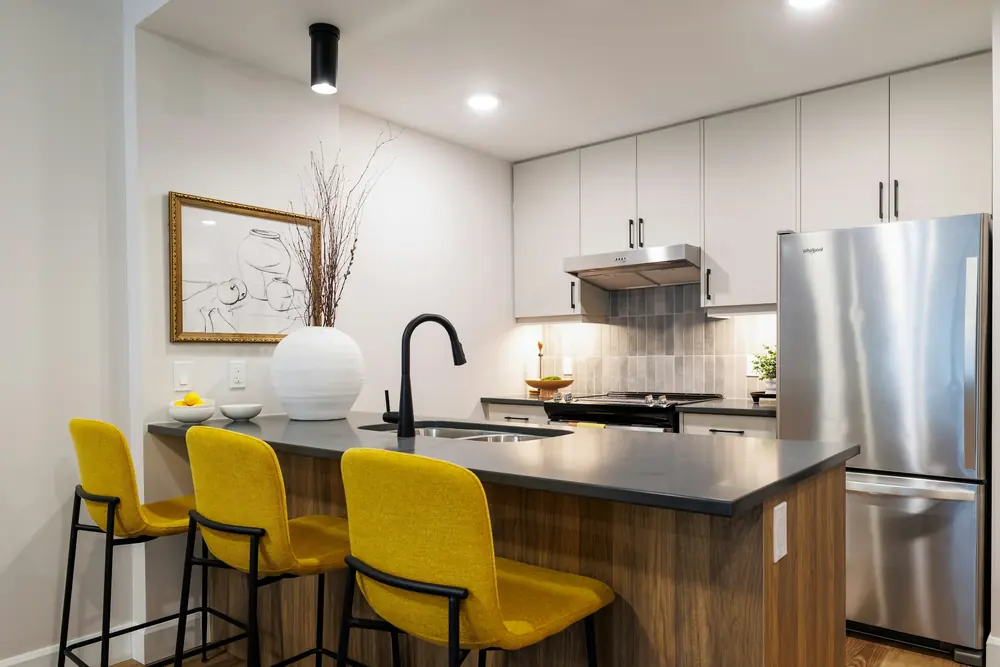
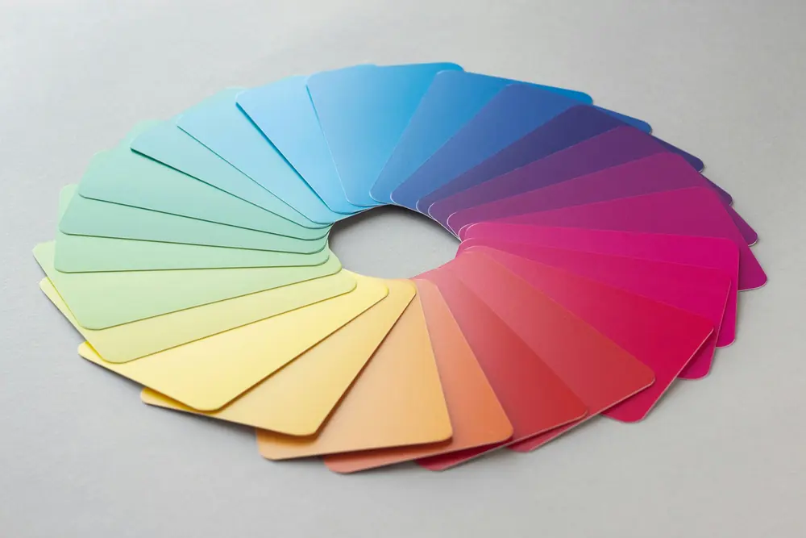
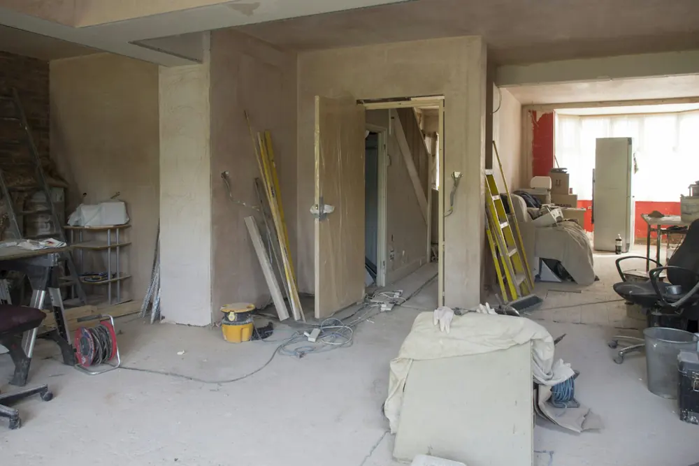

Visitas de lunes a viernes, con cita
Estudio de interiorismo
Interiores <em>cálidos</em>, pensados para su día a día
Diseño de ambientes, cocinas, baños y mobiliario a medida para casas y departamentos. Usted trabaja directamente con la arquitecta, con renders para aprobar y una lista de compras clara.
- Primera visita sin costo
- Atención directa
- Renders antes de construir


Servicios
Servicios de interiorismo
Desde una consulta puntual hasta el diseño completo de su casa, con el mismo cuidado por el presupuesto, los materiales y los plazos.

Consulta de diseño
Una visita para resolver colores, distribución o compras de un ambiente.
Visitamos su espacio durante dos horas y conversamos sobre lo que quiere lograr. Recibe recomendaciones por escrito, una paleta de colores y materiales y una lista de compras sugerida. Es la forma más sencilla de empezar antes de decidir un proyecto completo.
Interiorismo residencial
Diseño completo de salas, comedores, dormitorios y estudios.
Diseñamos la distribución, la paleta de materiales, la iluminación y el mobiliario de cada ambiente. Presentamos renders para su aprobación antes de comprar o fabricar. Si lo desea, coordinamos las compras y la instalación.
Cocinas y baños
Renovación de cocinas y baños con planos de instalaciones y acabados.
Rediseñamos cocinas y baños pensando en el uso diario, el almacenamiento y la limpieza. Entregamos planos de instalaciones, enchapes y muebles para el contratista y el taller. Revisamos la obra en visitas programadas hasta la entrega.
Mobiliario a medida
Clósets, libreras, muebles de cocina y centros de entretenimiento.
Diseñamos muebles que se ajustan a su espacio y a lo que necesita guardar. Elaboramos planos de taller con medidas, materiales y herrajes. Los fabrican talleres de confianza y revisamos la instalación.
Color y materiales
Selección de pinturas, pisos, enchapes, telas y cortinas.
Le ayudamos a elegir colores y materiales con muestras reales en su propio espacio. Consideramos la luz de cada ambiente, el mantenimiento y el presupuesto. Recibe una ficha con códigos, proveedores y cantidades.
Remodelaciones menores
Cambios de distribución, pisos y acabados en casas y departamentos.
Planificamos remodelaciones que no requieren cambios estructurales, como abrir una cocina o renovar pisos. Coordinamos al contratista y revisamos el avance en visitas programadas. Recibe un presupuesto por partidas antes de iniciar.
La interiorista
Una profesional responsable de su proyecto
Arq. Inés Valdizón
Arquitecta e interiorista
Atiende personalmente cada proyecto, desde la primera visita hasta la instalación del último mueble. Antes de abrir su estudio coordinó proyectos de interiorismo residencial y hotelero.
- Cargo
- Arquitecta e interiorista
- Experiencia
- 12 años
- Atención
- Lun–Vie 9:00–17:00 · Visitas con cita
- Áreas
- Interiorismo residencial, cocinas y baños, mobiliario a medida
Testimonios
Lo que dicen nuestros clientes
Inés entendió lo que queríamos desde la primera visita. La sala y el comedor quedaron cálidos y muy prácticos.
La cocina a medida aprovecha cada rincón. El taller cumplió las medidas al milímetro.
Con una sola consulta de diseño resolvimos los colores y la iluminación de todo el departamento.
Muy buen criterio con los materiales. El proyecto tomó una semana más de lo previsto.
Contacto
Cuéntenos sobre su proyecto
Escríbanos o llámenos para agendar una visita, solicitar una propuesta o resolver sus dudas.
- DirecciónDirección de ejemplo, Zona 15, Ciudad de Guatemala (se abre en una pestaña nueva)
- Teléfonos5619‑2730 Planta
- Correoinfo@teradevsgt.com
- HorarioLunes a viernes 9:00–17:00 · Visitas con cita
Envíenos un mensaje
Por su privacidad, no incluya contraseñas ni datos bancarios en este formulario.